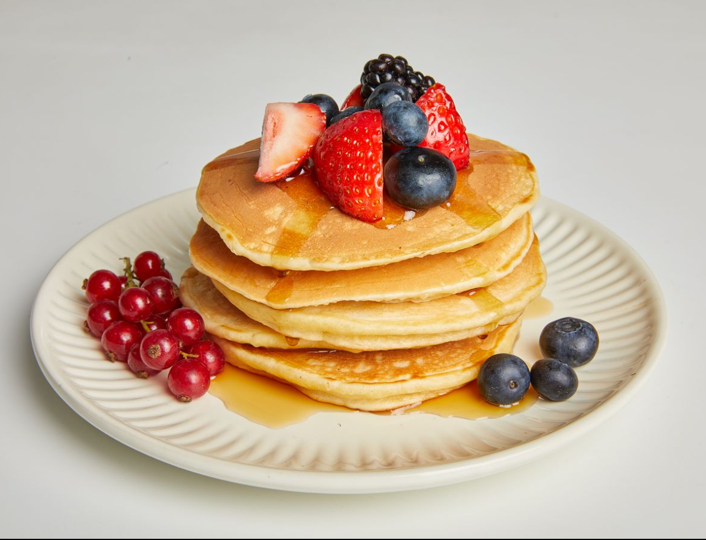

Pancake

Description
What is the dish?
A pancake is a flat, typically round, and thin piece of cooked batter made
from a mixture of flour, eggs, milk, and baking powder or baking soda.
Pancakes are a popular breakfast food in many cultures and are often served
with various toppings such as maple syrup, fruit, whipped cream, or chocolate chips.
They can be sweet or savory, and the thickness and texture can vary,
ranging from light and fluffy to thin and crispy. Pancakes are cooked on a hot
surface, such as a griddle or skillet, and are flipped to ensure even cooking
on both sides. This simple and versatile dish is enjoyed by people around the world
as a comforting and delicious morning meal.
Ingredients:
- 1 cup all-purpose flour
- 2 tablespoons sugar
- 1 teaspoon baking powder
- 1/2 teaspoon baking soda
- 1/4 teaspoon salt
- 3/4 cup buttermilk
- 1/4 cup milk
- 1 large egg
- 2 tablespoons unsalted butter, melted
- Cooking spray or additional butter for greasing the pan
Steps:
- In a large mixing bowl, whisk together the flour, sugar, baking powder,
baking soda, and salt.
- In a separate bowl, whisk together the buttermilk, milk, egg, and melted butter.
- Pour the wet ingredients into the dry ingredients and stir until just combined.
The batter may be a bit lumpy, but that's okay.
Don't overmix; it's important
to keep the batter a bit lumpy for fluffy pancakes.
- Preheat a griddle or non-stick skillet over medium-high heat.
Lightly coat the surface with cooking spray or butter.
- Pour 1/4 cup portions of batter onto the griddle for each pancake.
Cook until bubbles form on the surface of the pancake and the edges look set,
about 2-3 minutes.
- Flip the pancakes with a spatula and cook until the other side is golden brown,
about 1-2 minutes more.
- Repeat until all the batter is used, adding more cooking spray or butter
to the griddle as needed.
- Serve the pancakes warm with your favorite toppings, such as maple syrup,
fresh fruit, or whipped cream.
Enjoy your delicious homemade pancakes! Feel free to customize the recipe
by adding ingredients like blueberries, chocolate chips, or nuts to the batter
for extra flavor.
Back to main-page